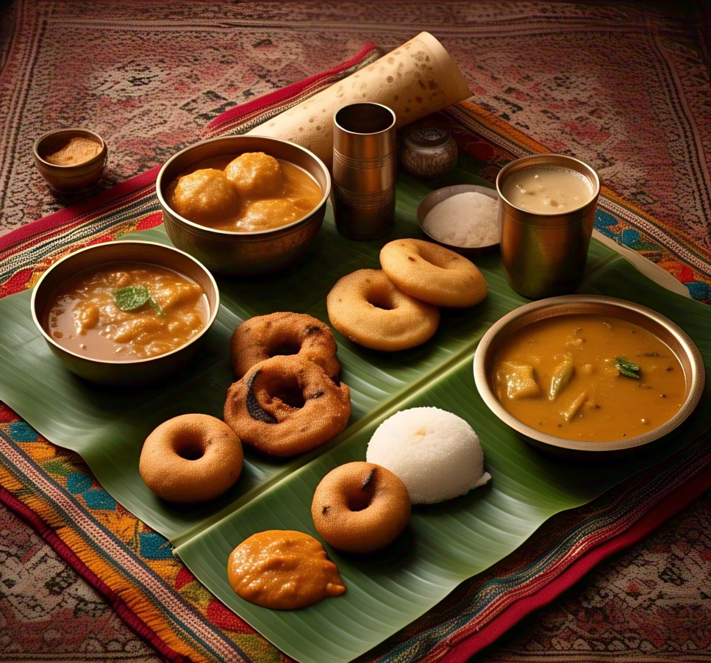

North Indian Cuisine
Rich, heavy, and creamy fare such as butter chicken, paneer, and naan, loaded with strong spices and milk products.
South Indian Cuisine
Light, acidic, and spicy — famous for dosas, idlis, sambar, and coconut curries with a combination of heat and sourness.

East Indian Cuisine
Delicate, mildly flavored, and homely — includes fish, rice, and desserts like rasgulla, with mustard and panch phoron flavors.

West Indian Cuisine
A colorful blend — from hot, coconut-based Maharashtrian curries to sweet and sour Gujarati thalis, and spicy Rajasthani treats.